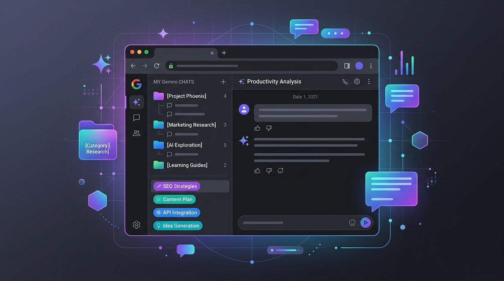

2026年9月時点で、Google Geminiにはチャットスレッドをフォルダに分けて整理する機能がありません。代替として、タイトルのルール化、ピン留め、拡張機能の活用、そしてタブ管理拡張でAIチャットタブを丸ごとフォルダ保存する方法があります。
「Geminiのスレッドを整理することはできないんですね。フォルダ構造にとか……」
そう思った方、多いのではないでしょうか。
おっしゃる通り、現在のGeminiには過去のチャットをフォルダに分けて管理する機能が標準では搭載されていません。ChatGPTもClaudeも、2026年時点ではフォルダ機能に対応しておらず、AIチャットツール全般に共通する課題です。
履歴がどんどん溜まっていくと、「あのときの回答、どのスレッドだっけ？」と過去のやり取りを探すのが本当に大変になります。
この記事では、フォルダ機能がない中でGeminiの履歴を使いやすく整理するための5つの代替アプローチを紹介します。最後の方法は、タブ管理の発想で根本的に解決するアプローチです。
現状の問題：なぜGeminiの履歴は散らかるのか
Geminiのサイドバーに並ぶチャット履歴は、基本的に時系列の一覧です。
- フォルダ分類ができない
- タグ付けもできない
- 検索はできるが、キーワードを忘れたら詰む
- スレッド数が増えるほど、目的のチャットを見つけるのに時間がかかる
仕事・趣味・勉強と用途をまたいで使うほど、「あの回答がどこにあるかわからない」問題は深刻になります。
アプローチ① タイトルの「ルール化」で擬似フォルダにする
Gemini のチャットタイトルは自由に変更できます。これを利用して、先頭にカテゴリ名を統一フォーマットで付けると、一覧に並んだ時に視覚的に探しやすくなります。
タイトル命名ルールの例：
- 【仕事】〇〇の企画書案
- 【語学】英文メールの添削
- 【趣味】京都旅行の計画
- 【開発】Python スクレイピングのエラー修正
- 【SEO】ブログ記事のタイトル案
ポイントは全角カッコ【 】を使うこと。半角よりも視認性が高く、一覧でパッと目に入ります。自動生成されたタイトルのままにせず、会話が終わったら必ずリネームする習慣をつけましょう。
アプローチ② 重要なスレッドの「固定（ピン留め）」
何度も使いたいプロンプトや、長期プロジェクトのスレッドは、ピン留めして上部に固定するのが一番確実です。
三点リーダーをクリック
Gemini のチャット履歴一覧から、固定したいスレッドのタイトル横にある三点リーダー（︙）をクリックします。
「固定」を選択
メニューから「固定」を選択。これで新しいチャットを開いても、固定したスレッドは常に一覧の最上部に表示されます。
ピン留めは数に制限がないため、「定型プロンプト集」「進行中のプロジェクト」など、頻繁にアクセスするものを固定しておくと効率的です。
アプローチ③ ブラウザの拡張機能でフォルダ化する
PCの Chrome をお使いであれば、サードパーティ製の拡張機能を使ってGeminiの画面にフォルダ機能を追加できます。
「Folders for Gemini」などの拡張機能を導入すると、サイドバーにフォルダを作成し、ドラッグ＆ドロップでスレッドを分類できるようになります。
⚠️ 注意点：これらはGoogle公式の機能ではありません。
- Gemini側のデザイン変更で突然使えなくなる可能性がある
- 業務上の機密情報を扱う場合は、セキュリティ観点から慎重に
- 拡張機能自体のメンテナンスが止まるリスクもある
アプローチ④ 目的ごとに「別タブ」で管理する — 発想の転換
ここからが、タブ管理の視点を加えたアプローチです。
Gemini内の履歴を整理しようとするのではなく、「用途ごとに専用のGeminiタブを開いておく」という発想に切り替えてみてください。
Gemini側にフォルダがないなら、ブラウザのタブ管理を「フォルダ」代わりに使えばいい。
たとえば——
- 「SEOキーワード調査」の Gemini タブ
- 「コードレビュー」の Gemini タブ
- 「ブログ記事のリライト」の Gemini タブ
- 「英語メールの添削」の ChatGPT タブ
- 「長文分析」の Claude タブ
これらをタブ管理拡張のフォルダに保存しておけば、タブを閉じてもワンクリックで即座に復元できます。
Gemini側の履歴を探すのではなく、ブラウザのタブとして管理するほうが圧倒的に速いのです。
アプローチ⑤ LB TAB Layers で AI チャットタブを一元管理する
この「タブ＝フォルダ」の発想を最も効率的に実現するのが、Chrome 拡張機能 LB TAB Layers です。
LB TAB Layers で実現できること
| 機能 | AIチャット管理での活用 |
|---|---|
| フォルダ管理 | 「AI チャット」「仕事AI」「勉強AI」などのフォルダを作成し、Gemini・ChatGPT・Claude のタブをまとめて保存 |
| サブフォルダ | 「AI チャット」の中に「SEO」「コーディング」「翻訳」のサブフォルダを作成して細分化 |
| ワンクリック復元 | 保存したAIチャットタブを、必要なときにクリック1つで即復元 |
| 一括保存・一括復元 | 「仕事AI」フォルダ内の全タブを一括で開く。作業開始時にワンクリックでAI作業環境が復活 |
| AI 検索 | 「先週 SEO について聞いた Gemini のスレッド」のように、自然言語で保存済みタブを検索 |
| 通知バッジ | Gemini が長い応答を生成中でも、タブを開かずにサイドパネルで完了を確認 |
| ブックマーク同期 | 保存したタブはChrome ブックマークに同期。拡張を消してもデータは残る |
| メモリ節約 | 使わないAIタブを閉じてメモリを解放。Gemini は1タブで300〜500MBを消費することも |
具体的な運用フロー
「AI チャット」フォルダを作る
LB TAB Layers のサイドパネルで「＋」ボタンをクリックし、「AI チャット」フォルダを作成します。必要に応じて「SEO」「コーディング」「翻訳」などのサブフォルダも作成。
Gemini タブをフォルダに追加
開いている Gemini のタブを、サイドパネルのフォルダにドラッグ＆ドロップ、または「＋」ボタンで追加。その瞬間にブックマークとして自動保存されます。
安心してタブを閉じる
ブックマークとして保存されているので、タブを閉じてもデータは消えません。メモリが解放されてPCが軽くなります。Gemini は1タブあたり300〜500MBのメモリを消費するため、使わないスレッドを閉じる効果は絶大です。
必要なときにワンクリックで復元
サイドパネルのフォルダから、保存したタブをクリックするだけ。Gemini がそのスレッドの状態で開きます。「全部開く」で一括復元も可能です。
なぜこの方法がベストなのか
| 比較項目 | Gemini内で整理 | LB TAB Layers で管理 |
|---|---|---|
| フォルダ分類 | ✗ 不可 | ✓ 無制限 |
| サブフォルダ | ✗ 不可 | ✓ 対応 |
| Gemini + ChatGPT + Claude の横断管理 | ✗ 不可（各サービス個別） | ✓ 1つのフォルダで統合 |
| 検索方法 | キーワード一致のみ | 1,000語ファジー検索 + AI検索 |
| メモリへの影響 | タブを開き続ける必要あり | 閉じてもワンクリック復元 |
| データの安全性 | Gemini側のUI変更に依存 | Chrome ブックマークに保存（永続） |
| 外部拡張のリスク | Folders for Geminiなどは非公式 | Chrome Web Store 公式審査済み |
特に大きいのは「複数AIサービスの横断管理」ができる点です。Gemini・ChatGPT・Claude を用途別に使い分けている人にとって、1つの管理画面ですべてのAIチャットタブを整理できるのは画期的です。
よくある質問
Q. Geminiに将来フォルダ機能が追加されたら、この方法は不要になりますか？
Geminiにフォルダ機能が追加されても、ChatGPTやClaudeまで含めた横断管理は Gemini 単体ではできません。複数のAIを使い分けるなら、タブ管理拡張による一元管理は引き続き有効です。
Q. Geminiのタブを保存したら、スレッドの途中から再開できますか？
はい。GeminiのURLにはスレッドIDが含まれているため、保存したタブを復元するとそのスレッドの会話がそのまま表示されます。途中からの続きも可能です。
Q. AIのタブはメモリをどれくらい消費しますか？
Gemini・ChatGPT・Claude はいずれもリッチなWebアプリで、1タブあたり300〜500MB程度のメモリを消費します。5つのAIタブを常時開いていると、それだけで1.5〜2.5GBのメモリを専有。LB TAB Layers で閉じて保存すれば、その分のメモリが即座に解放されます。
Q. 無料で使えますか？
3ヶ月間、すべての機能を無料でお試しいただけます。その後も基本機能は引き続き利用可能です。
まとめ
Gemini のスレッドをフォルダで整理する方法は、大きく5つあります。
- タイトルのルール化 — 先頭に【カテゴリ名】をつけて擬似フォルダに
- ピン留め — 重要なスレッドを上部に固定
- 専用拡張機能 — 「Folders for Gemini」等で画面内にフォルダを追加（非公式）
- 目的別タブ管理 — 発想を変え、タブ単位でフォルダ保存する
- LB TAB Layers — タブ管理拡張で Gemini・ChatGPT・Claude を横断的にフォルダ管理
最も手軽なのは①②の組み合わせ。
最も根本的な解決は⑤の「AIチャットタブをフォルダ管理する」アプローチです。
AIを日常的に使うなら、AIチャット自体をブラウザのタブとして管理する発想を取り入れてみてください。